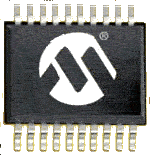
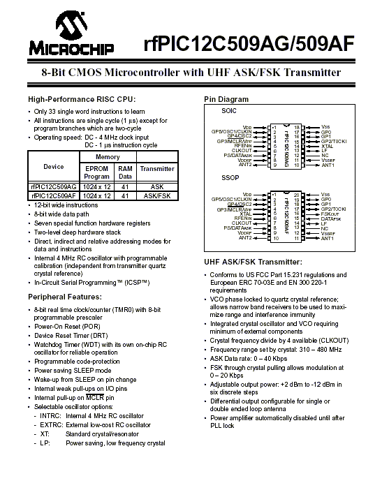

25/01/2002: Nouveaux Microcontrôleurs série rfPIC de Microchip

Microchip Technology (http://www.microchip.com) vient de produire une nouvelle famille de microcontrôleurs conçue pour réduire le nombre de composants lors de réalisations de montages Radio. Les rfPICI2C509AG (ASK) et rfPICI2C509AF (ASK et FSK).
Les rfPICI2C509AG sont des microcontrôleurs 18-pins fonctionnant en mode ASK. Les rfPICI2C509AF sont des microcontrôleurs 20-pins fonctionnant en mode ASK et FSK. Ces RF µC qui intégrent un émetteur 310-480 MHz en mesure donc de fonctionner à 433.92 MHz conformément aux normes Européennes et Francaises. Ces circuit sont particulièrement destinés aux systèmes de contrôle à distance, télécommandes, jouets, sécurité et contrôle de d'accès. Beaucoup de similitudes avec le PIC12C509 puisque ce µC intègre 1024 mots de mémoire de programme (EPROM) avec 41 octets de RAM. Ainsi que six lignes I/O, un timer 8 bits, un watchdog et différents oscillateurs dont un oscillateur interne à 4MHz. J'attire votre attention sur le fait que ce mode exige de calibrer l'oscillateur si une fréquence précise de 4MHz est requise (voir article sur DCL639) Comme la plupart des µC PIC il se programme à l'aide de 33 instructions d'un seul mot, soit 1µs par cycle et par instruction à 4 MHz. L'émetteur intègre VCO à vérouillage de phase. L'oscillateur intégré et le VCO exigent un minimum de composants externes. La fréquence d'émission est bien entendu fonction de la fréquence de raisonnance de ce quartz soit: Fémission = 32xFosc_q. Ainsi, pour obtenir une fréquence de 433.92MHz, il faudra connecter un quartz de 13.56MHz.En outre, le µC est prévu pour une programmation série in-situe (ICSP) c'est à dire qui permet aux appareils d'être programmés sur le montage, tout en gardant à l'esprit qu'il s'agit d'EPROM et que donc, cette programmation n'aura lieu qu'une seule fois. Reste à savoir si nos programmateurs sauront également les programmer ! Tous les espoirs sont permis, vous remarquerez que les pins 1-4 et 15-18 sont celles du PIC12C509, un simple adaptateur devrait suffire... A suivre.
En ASK le débit théorique est de:0–40Kbps. En FSK: 0–20Kbps. La puissance de sortie est paramétrable entre +2dBm et -12dBm en six pas. Espéront maintenant que nos fournisseurs habituels seront en mesure de nous vendre ces composants. J'invite donc les revendeurs et les acheteurs à me communiquer les adresses de ces fournisseurs. Bien entendu, ces adresses seront ensuite communiquées aux lecteurs.
Télécharger le Datasheet du µC pour en savoir + : PIC12C509AF_AG.pdf (1.3Mo)

Pour finir un peu de théorie et beaucoup de pratique sur un sujet très intéressant concernant le calcul d'antennes sur circuit imprimé. Vous en conviendrez, un parfait complément au µC PIC12C509Ax. Cette note d'application est éditée par Microchip. A lire absolument. Antenne_appli.pdf (105Ko)